1) Farmear Zeny Matando Monstruos
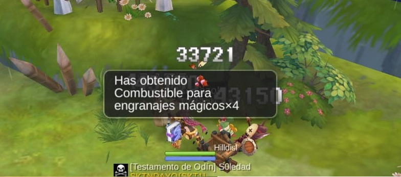La mejor forma de obtener zeny!!!, siempre y cuando mates al monstruo de un solo golpe
Si eres menor al nivel 160 recargarás 300 minutos de combate todos los dias hasta un tope de 900 minutos.
Si eres nivel 160+, recargarás 450 minutos de combate todos los dias hasta un máximo de 1350 minutos de combate
Utiliza todo el tiempo de combate que puedas matando monstruos de un solo golpe
Busca una habilidad de area para acabar con varios monstruos de un solo golpe.
Esto es importante ya que optimizará tu forma de hacer zeny porque ocuparás menos tiempo de combate matando más monstruos de un solo golpe.
+ consumo de habilidades = - tiempo de combate
- tiempo de combate = - zenny
- consumo de habilidades = + tiempo de combate disponible
+ tiempo de combate disponible = + zeny
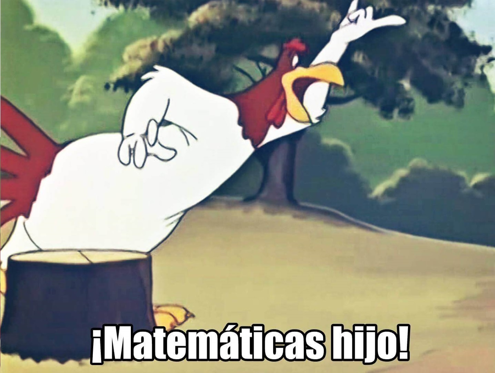En resumen: mientras más monstruos mates de una sola habilidad, mejor
Deje de farmear si su tiempo de Combate se vuelve color rojo
No olvides usar tus Cadenas y Hierro meteórico, por si cae Carta y te sacas más de una C:<
Mientras más cercano sea el nivel de Monstruo comparado al de tu Nivel, mejores botines de zeny/exp obtendrás
2) Cazador de Cartas
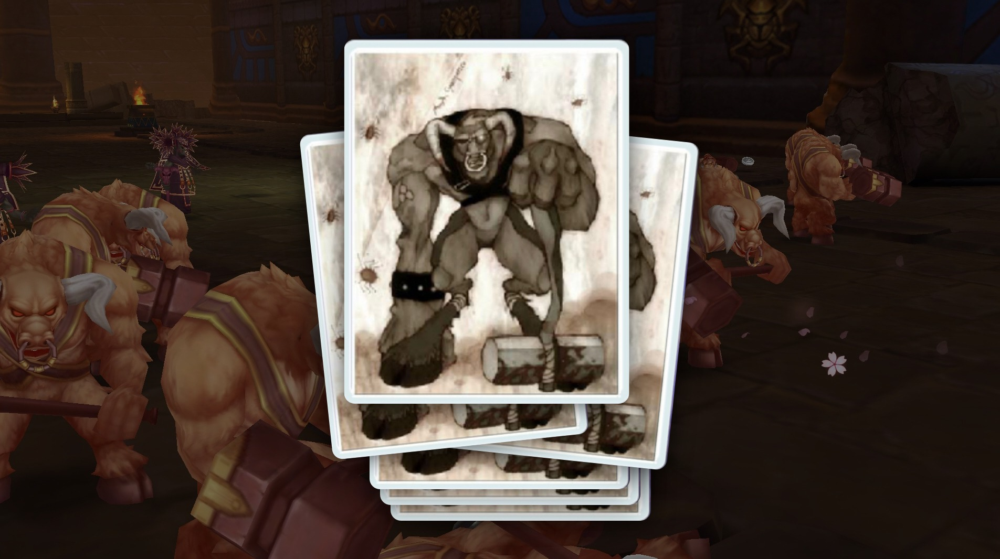Cazar Cartas requiere mucha paciencia y suerte ya que, estadisticamente, debes matar 10.000 Monstruos para obtener una Carta. Sin embargo la suerte no deja de influenciar, puedes obtener tu Carta después de matar al Monstruo número 100 o ningúna Carta después de matar 50.000 Monstruos. La caza de Carta no es para los débiles de corazón.
No olvides usar Hierro meteórico para cuadriplicar las Cartas que dropes c:<

Consulte el Intercambio para ver qué Carta se está vendiendo a un buen precio, y enfóquese en esa Carta, puedes mandar a tus Mascotas a una Aventura de Mascota en busqueda de esa Carta también. Consulte nuestra Guia:
3) Tienda de la Suerte
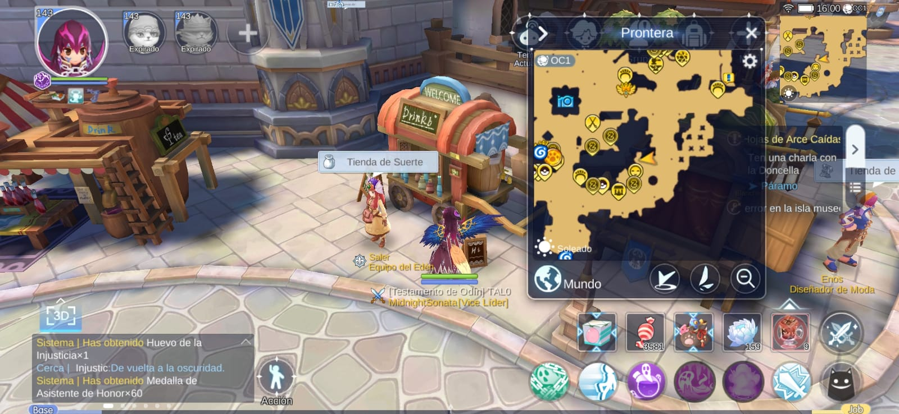Revise todos los dias que pueda, la Tienda de la Suerte y, si tiene suerte, aparecerán artículos caros y gemas valiosas. Vendalos en el Intercambio para ganar mucho zeny
Sea inteligente al momento de intercambiar la Moneda Edén por los artículos de la Tienda de la Suerte. Escoga los artículos que tengan mayor cantidad y que dá más zeny al momento de venderlos en el Intercambio vs la cantidad de Monedas de Edén que pide
Zeny por Edén = (Cantidad * Precio de cambio) / Costo de la moneda de Edén
PD: estámos en la Guia de zeny, habrá que hacer matematicas (=^u^=)
¿Cómo Obtener Monedas de Edén?
- Completando: Manual de Aventuras
- Mandar a tu Mascota a Trabajo de Mascota: "Asistente Sonriente"
- Realizar Aventura de Mascota de máximo nivel
- Misiones de Evento
- Guild: reclamar cofres e invertir sus Canicas Brillantes en Caja de Arena de Gato Extraño.
¿Dónde está la Tienda de la Suerte?
Abra su menu de Asistente y seleccione "Go"
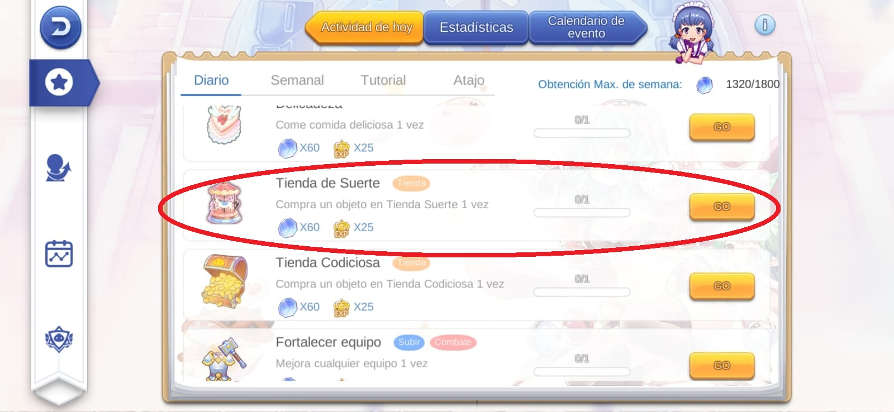Le aparecerá este recuadro donde podrá escoger la ciudad e ir
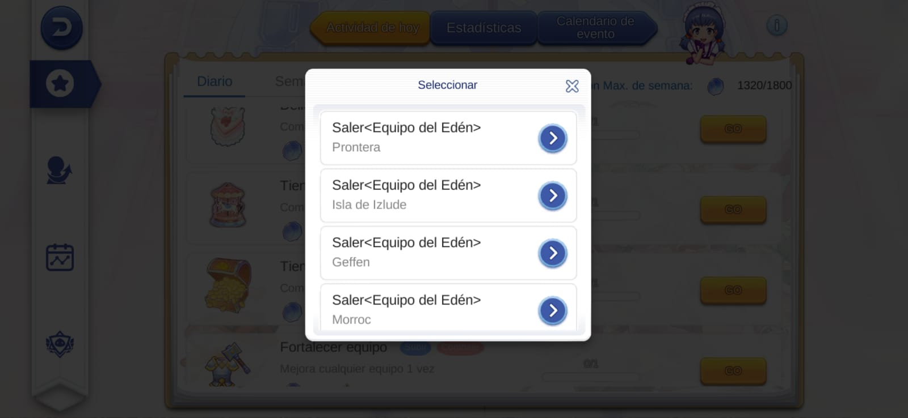Algunos NPCs cambian otros objetos de intercambio por la Moneda Edén, como Assistan Shop de Prontera
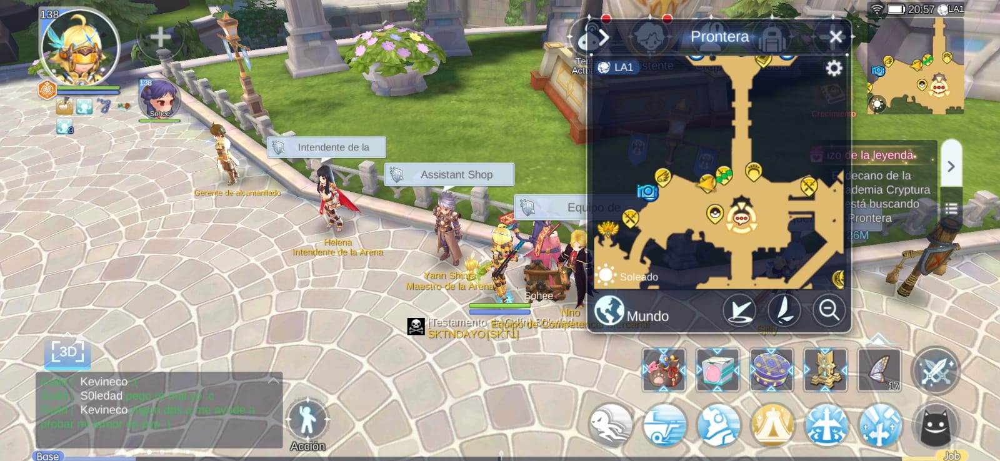pero mas que una ganancia, es mas bien una salida de apuros y a veces no es recomendable, la mejor forma es conseguirlos gratis con las anteriores opciones
4) Caza de MVPs y Mini mvps
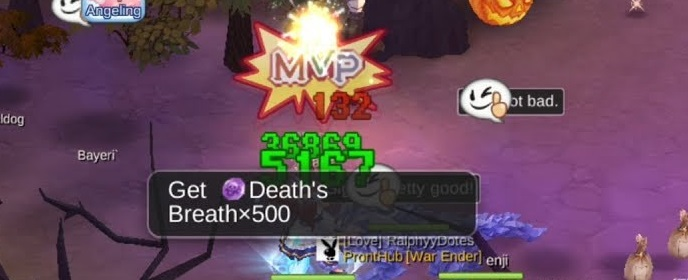No recomiendo esta parte para los iniciados, ya que requiere buen Equipo, tiempo y Cartas para poder matar a los MVPs y minis.
Los MVPs y mini mvps pueden arrojar buen Equipo y valiosos botines, y si tienes la suerte de conseguir una Carta, estarás listo de por vida. Intente probar cual es su rango de poder y verificar qué MVP o mini mvp puede matar y hacerlo cuando los vea, usualmente el MVP avisa cuando va a reaparecer con un diálogo en el lado izquierdo de la pantalla, entonces deberá buscarlo y matarlo antes que los demás lo hagan.
Suerte!
Casi lo olvido. No podrás golpear MVPs ni minis si cambió de canal hace menos de 2 horas
5) Aventura de Mascota
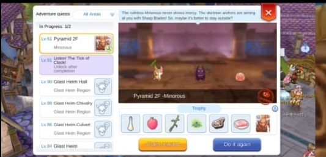Las mascotas son una de las mejores inversiones en Ragnarok M 2. Invierta en ellas lo antes posible!!
En el nivel 30, puedes comenzar a enviar a tus mascotas a Aventura de Mascota. Las recompensas incluyen botines raros, materiales refinados, cartas y cofres raros que pueden dejar objetos valiosos.
No lo olvides: Usa los tipos de mascotas correctos para obtener un cofre garantizado. También intente subir la Intimidad con su mascota para aumentar más la probabilidad de obtención de mejores botines. Consulte nuestra Guia:
Ya vas viendo por qué necesitas mascotas?
6) Misiones diarias
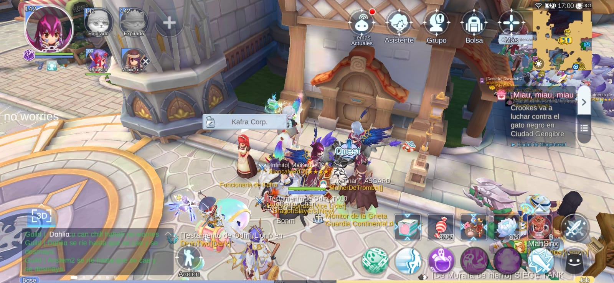Probablemente ya esté haciendo esto, pero recuerde que debe hacerlo todos los dias para progresar rápidamente.
¿Cuáles son las Misiones Diarias?
- Tablero de Misiones: Otorga exp/zeny y otros objetos muy utiles
- Reparar Grieta: Primero debe Observar qué objetos son los mas caros y apuntar hacer esa Grieta, venda ese objeto, como también puede guardarlos para mejorar su Equipo.
Puede hacer las Misiones Diarias instantáneamente con Albondigas de aventura
¿Cómo consigo Albóndigas de Aventuras?
- Realizar Aventura de Mascota de máximo nivel
- Mandar a tu Mascota a Trabajo de Mascota: "Centro de Cocina"
- Misiones de Eventos
- Comprandolas con dinero real
- Intercambiando la Moneda de Estrella de Flora (Evento de Kafra/Invasion de gatos de los dias Miércoles)
7) Instancias Semanales
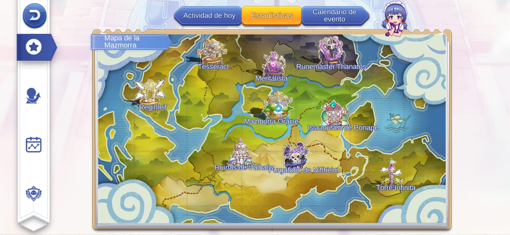¿Cuáles son las Instancias Semanales?
- Torre de Thanaos: Millones ee zeny y grandes cantidades de Runas avanzadas
- Mazmorra del Oraculo: Obtendrás Cartas y objetos que te ayudarán a conseguir más Cartas
- Corredor: Obtendrás botines muy interesantes y necesarios para el progreso de tu Personaje
- Torre Infinita: Obtendrás zeny, items interesantes, Equipo de alto precio de zeny, drops de MVPs, etc
- Purgatorio: similar que Torre Infinita pero mas rápido de completar
- Ruinas de Valhalla: similar a Purgatorio
- Cake (Batalla de Pasteles): En esta puedes recibir los premios 4 veces maximo a la semana y consume 60 de Tiempo de Combate cada vez que se realice. Asegurese de ingresar a la Instancia con Tiempo de Combate disponible
- Kafra / Invasion de gatos: Otorga recompensas muy valiosas como la Moneda de Estrella de Flora + materiales de alto valor en zeny
Probablemente necesites ayuda de varios Jugadores para completar estas Instancias Semanales, ya que son de nivel muy alto de dificultad y además poseen mecánicas para ser completadas
Unirce a una Guild, revisar los Grupos disponibles ayudarán a encontrar Jugadores que te hechen una mano
Por favor no olvide ser amable, gentil y no contaminar con spam de peticiones, eso solo empeorará la situación. Podría ser un poco fustrante no completar esto alguna semana, pero aun tiene muchas opciones más de hacer zeny. Continuemos...
8) Canjear Canica Brillante
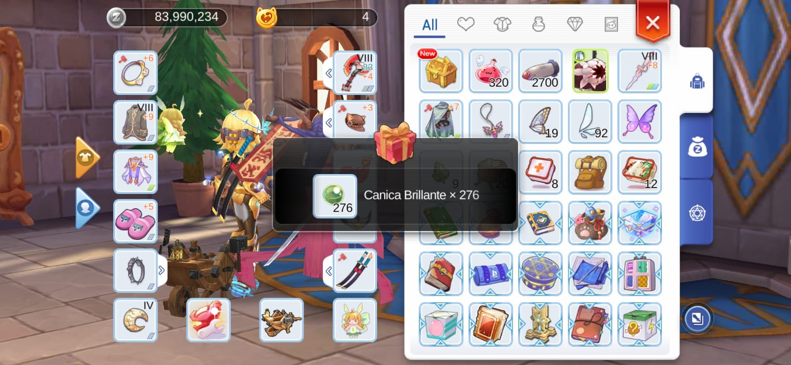Unace a una Guild (Gremio) lo antes posible!!
Cuando los compañeros de la Guild realizan las Tareas Diarias, semanales, realizan donaciones a la Guild, Batallas de Guilds, Rezar, etc. Todos los compañeros podrán entrar al HALL de la Guild y reclamar su cofre de recompensas al lado derecho del mapa de la Guild y abrir sus cofres.

Estos Cofres le otorgarán Canica Brillante que podrá intercambiar en Caja de Arena de Gato Extraño, que está cerca de donde reclamó sus cofres que dan las Canicas Brillantes
Invertir todas sus Canicas para obtener mucho zeny, honor prof, puntos de contribución, etc.
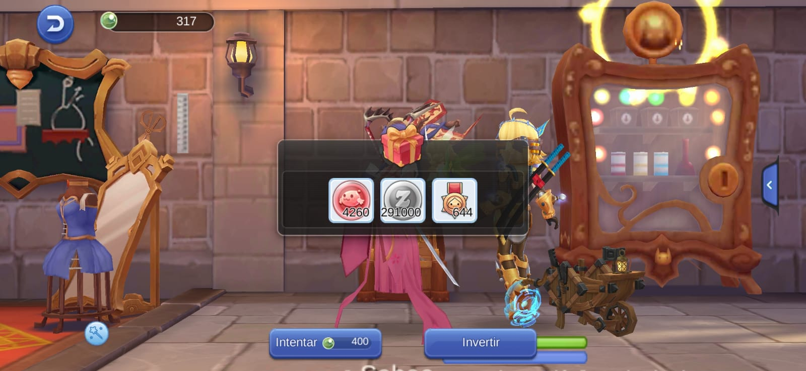